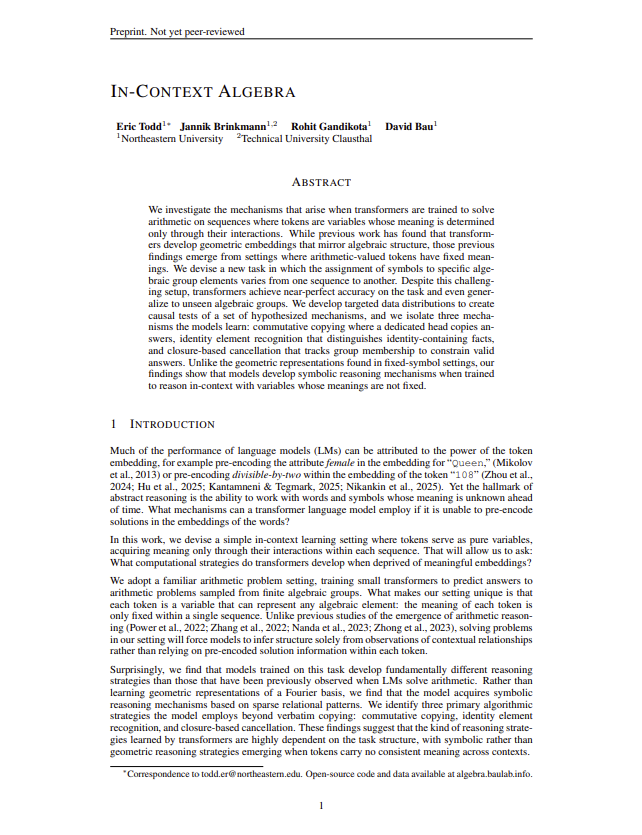
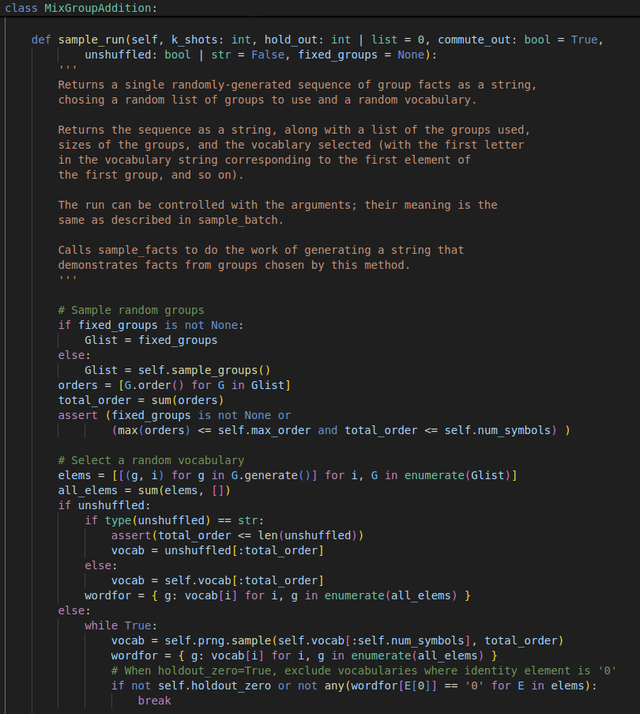
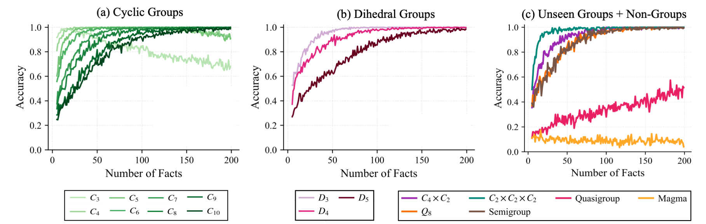
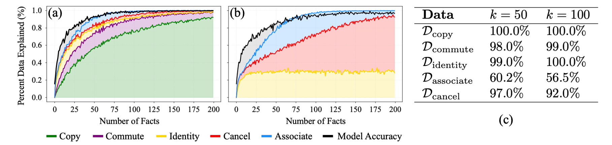
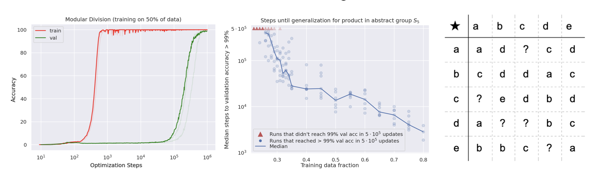
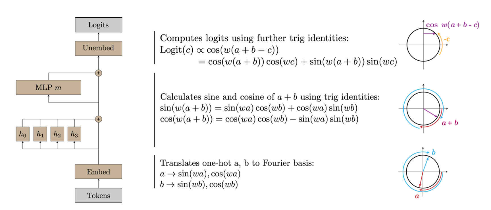
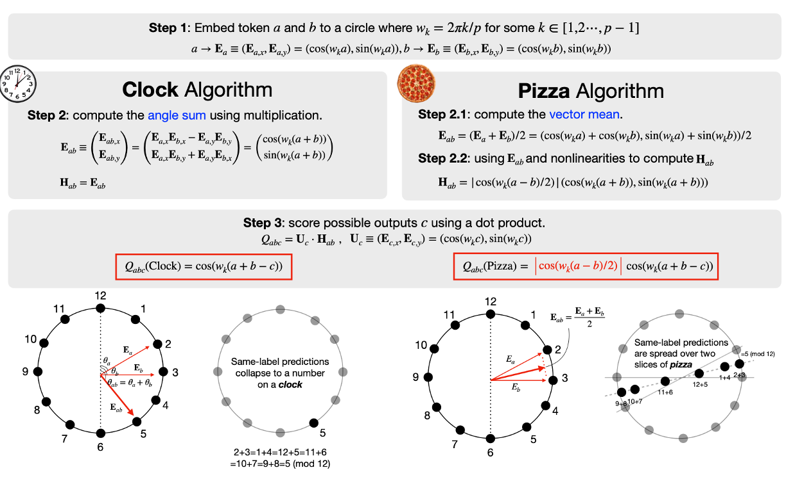
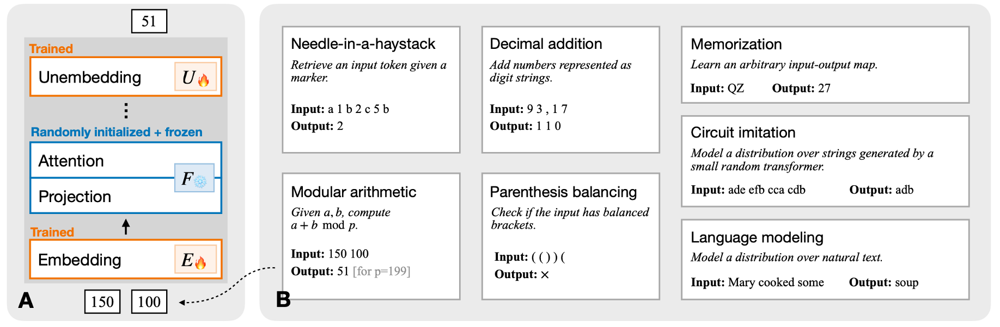
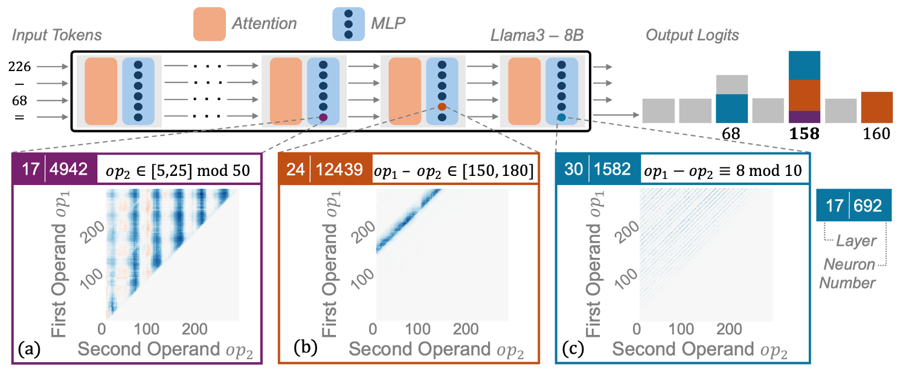
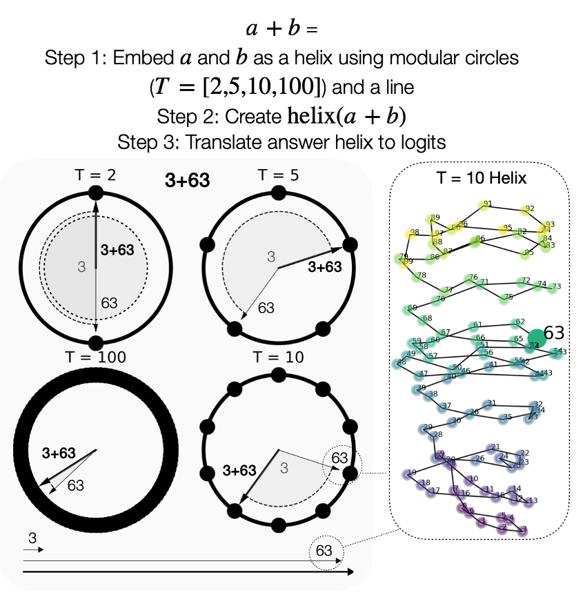

ArXiv
Preprint

Source Code
Github

Data
How Do Transformers Reason About Variables In-Context?
Much of the performance of language models (LMs) can be attributed to the power of token embeddings; prior work has shown that token embeddings can pre-encode rich semantic, syntactic, and numeric structure. However, the hallmark of abstract reasoning is the ability to work with words and symbols whose meaning is unknown ahead of time.
In this paper, we design an in-context learning setting to study the computational strategies that transformers develop to solve abstract arithmetic tasks. What makes our setting unique is that each token is a variable that can represent any algebraic element, and tokens acquire meaning only through their interactions within a sequence. In contrast to the geometric representations learned for numeric reasoning seen in prior work (where token meanings are fixed), we find that models develop symbolic reasoning mechanisms based on sparse relational patterns. Our findings suggest that the kinds of reasoning strategies learned by transformers are dependent on the task structure.
The Task: In-Context Algebra
We train transformers to solve arithmetic problems sampled from a mixture of finite algebraic groups (like cyclic and dihedral groups). Each task sequence presents several examples of products between elements in a group with the goal that models will learn to predict the outcome of unseen group products. However, key challenge is that each token is a variable whose meaning changes between sequences. For example, the symbol "g" might represent the identity in one sequence but a 90-degree rotation in another. Models can infer what each symbol means only from how it interacts with other symbols in-context. You can try to solve some example in-context algebra sequences for yourself below.
Try It Yourself
Can you predict the answer? Look at the sequence of facts below and try to figure out what comes next:
Sequence Generation
We generate in-context algebra sequences in three steps:
- Sample a set of algebraic groups with total order less than or equal to the number of variable tokens.
- Assign a variable token to each group element using a random one-to-one mapping.
- Sample facts from the randomly sampled groups, convert facts into variable statements, and concatenate them together into a sequence.

Can Transformers Learn This Task?
Models achieve near-perfect hold-out accuracy for in-distribution groups: (a) cyclic groups and (b) dihedral groups. In general, hold-out performance improves as more facts are given as context to the model. More surprising is the model's generalization to (c) unseen algebraic groups. Models also perform well on semigroups, but worse on quasigroups and collapse on magmas (also shown in (c)).

Hypothesizing Model Mechanisms
As you probably saw when trying to solve different sequences, it's possible that multiple algorithms could theoretically produce correct predictions. This can make it challenging to identify which mechanisms the model actually implements. To disambiguate between potential mechanisms, we design five targeted data distributions to test specific algorithms that can solve algebra sequences when a corresponding set of facts is present in the context: Verbatim Copying, Commutative Copying, Identity Element Recognition, Closure-Based Cancellation, and Associative Composition.

We measure the percentage of (a) training sequences and (b) hold-out sequences that these algorithms can theoretically solve. We find that they cover 90.4% AUC of the training sequences and 84.7% AUC of hold-out sequences, within 2-3% of the model's empirical performance (shown in black). The model shows very good empirical performance on four of the five targeted data distributions, with associativity being more challenging.
Verifying Mechanisms
Based on the results above, we investigate how the model implements the algorithms with stronger empirical evidence: Verbatim Copying, Commutative Copying, Identity Element Recognition, and Closure-Based Cancellation. The results in this section are based on a single representative model, though we see similar results across training runs.
Copying and Commutative Copying
We find a single attention head is primarily responsible for copying answers from context, similar to the induction heads from (Olsson et al., 2022) or n-gram heads seen in (Akyürek et al., 2024). This head performs both verbatim copying (when an exact duplicate fact exists) and commutative copying (when a commutative pair exists, e.g., copying "ba = c" when the query is "ab ="). However, because not all products are commutative (in dihedral groups), this copying heuristic can't always solve a sequence, and additional mechanisms described below refine the prediction.
Identity Element Recognition

The model learns to represent facts with identity elements differently from other facts, which can be seen clearly when using PCA on the model's hidden states. The model solves identity facts from the interaction of two complementary mechanisms: query promotion which promotes both variables in the question as potential answers, and identity demotion which attends to and suppresses the known identity element. When both activate simultaneously, the non-identity token is correctly selected.
Closure-Based Cancellation
The final mechanism we study is closure-based cancellation. It is also a combination of two complementary sub-mechanisms: (1) tracking and promoting variables belonging to the same algebraic group (i.e., the closure), and (2) systematically eliminating invalid answers using the cancellation law. The difference between these two sets produces the final answer. We verify this mechanism by identifying subspaces that causally represent the closure and cancellation sets, though we find evidence this computation is spread across several attention heads.
Phase Transitions Correspond to Learning of Discrete Skills
Related Work
Our work builds on insights from a growing body of research investigating how transformers learn to perform numeric reasoning tasks, both in small models trained on algorithmic tasks and in large pre-trained language models.Numeric Reasoning in Small Transformers
Althea Power, Yuri Burda, Harri Edwards, Igor Babuschkin, Vedant Misra. Grokking: Generalization Beyond Overfitting on Small Algorithmic Datasets. 2022.
Notes: The first paper to identify and analyze "grokking", where transformers suddenly generalize after extended training. They find model outputs often reflect the structure of the underlying algorithmic task.
Neel Nanda, Lawrence Chan, Tom Lieberum, Jess Smith, Jacob Steinhardt. Progress Measures for Grokking via Mechanistic Interpretability. 2023.
Notes: The authors reverse-engineer how a one-layer transformer learns to solve modular addition via Fourier token embeddings. They identify three distinct phases of learning where the model first memorizes, then develops generalizing fourier features, then "cleans up" by removing the memorizing solution.
Ziqian Zhong, Ziming Liu, Max Tegmark, Jacob Andreas. The Clock and the Pizza: Two Stories in Mechanistic Explanation of Neural Networks. 2023.
Notes: Transformers can learn to solve modular addition by implementing either a "clock" algorithm or a "pizza" algorithm, depending on the random seed used for training. They analyze the mechanisms behind both algorithms, showing both rely on Fourier token embeddings.
Ziqian Zhong, Jacob Andreas. Algorithmic Capabilities of Random Transformers. 2024.
Notes: Transformers with trained token embeddings, but otherwise frozen random weights can still implement familiar geometric solutions to solve algorithmic problems, including Fourier token embedddings for modular arithmetic.
 Xiaoyan Bai, Itamar Pres, Yuntian Deng, Chenhao Tan, Stuart Shieber, Fernanda Viegas, Martin Wattenberg, Andrew Lee. Why Can't Transformers Learn Multiplication? Reverse-Engineering Reveals Long-Range Dependency Pitfalls. 2025.
Xiaoyan Bai, Itamar Pres, Yuntian Deng, Chenhao Tan, Stuart Shieber, Fernanda Viegas, Martin Wattenberg, Andrew Lee. Why Can't Transformers Learn Multiplication? Reverse-Engineering Reveals Long-Range Dependency Pitfalls. 2025.Numeric Reasoning in Pre-Trained LLMs
Yaniv Nikankin, Anja Reusch, Aaron Mueller, Yonatan Belinkov. Arithmetic Without Algorithms: Language Models Solve Math with a Bag of Heuristics. 2025.
Notes: The authors show that standard pre-trained LLMs use a "bag of heuristics" to solve arithmetic problems - a mix of task-specific, but locally generalizable .
 Xinyan Hu, Kayo Yin, Michael I. Jordan, Jacob Steinhardt, Lijie Chen. Understanding In-Context Learning of Addition via Activation Subspaces. 2025.
Xinyan Hu, Kayo Yin, Michael I. Jordan, Jacob Steinhardt, Lijie Chen. Understanding In-Context Learning of Addition via Activation Subspaces. 2025. Subhash Kantamneni, Max Tegmark. Language Models Use Trigonometry to do Addition. 2025.
Notes:
 Iman Mirzadeh, Keivan Alizadeh, Hooman Shahrokhi, Oncel Tuzel, Samy Bengio, Mehrdad Farajtabar. GSM-Symbolic: Understanding the Limitations of Mathematical Reasoning in Large Language Models. 2025.
Iman Mirzadeh, Keivan Alizadeh, Hooman Shahrokhi, Oncel Tuzel, Samy Bengio, Mehrdad Farajtabar. GSM-Symbolic: Understanding the Limitations of Mathematical Reasoning in Large Language Models. 2025.How to cite
The paper can be cited as follows.
bibliography
Eric Todd, Jannik Brinkmann, Rohit Gandikota, and David Bau. "In-Context Algebra." arXiv preprint arXiv:2512.XXXXX, (2025).
bibtex
@article{todd2025incontextalgebra,
title={In-Context Algebra},
author={Eric Todd and Jannik Brinkmann and Rohit Gandikota and David Bau},
journal={arxiv preprint arXiv:2512.XXXXX},
year={2025},
url={https://arxiv.org/abs/2512.XXXXX}
}